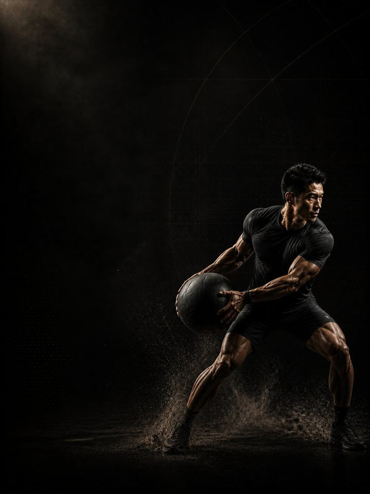

Grappling · Build
Turn the strength from Base into force you can produce again and again, after your grip and breathing have gone.
- Built forBJJ, wrestling and MMA athletes
- Training days3 gym days a week around your sport, 2 in heavy mat weeks
- Session length48–60 minutes
- Equipmentfull gym, plus a pull-up bar, a sled, a sandbag and a towel
- Formatmobile PDF, every exercise linked to a demo video
- Get all four blocks of this sport family for 119.990 KD (159.960 KD if bought separately).
- Upgrade to 1:1 coaching within 30 days and this price comes off your first month.
The store opens soon. For now, Buy opens an Instagram message and you receive the PDF there.
Who it's for
Grapplers who have built a strength base and now need it to last. Grappling Base built strength you can show once. Competition asks for it again and again, after your grip has gone and your breathing has broken. That is a different quality, and it is trained differently: repeated hard efforts with incomplete recovery, isometric holds that outlast the position, and grip work that continues after it burns.
The heavy lifting stays, at lower volume, to hold what Base built. The real work of the block moves to producing force when tired. This is the block that decides who is still driving forward in the last two minutes.
Where it sits in the year: Block 2 of 4. Base, Build, Compete, Restore, run in order. Run it after Grappling Base, in the lead-in to your competitive period.
Your week
Three gym days, arranged around mat time. Never heavy in the two hours before hard sparring.
Off-season, 3 gym days
| Sun | Mon | Tue | Wed | Thu | Fri | Sat |
|---|---|---|---|---|---|---|
| Day 1 | Sport | Day 2 | Sport | Day 3 | Rest | Rest |
In-season, 2 gym days
| Sun | Mon | Tue | Wed | Thu | Fri | Sat |
|---|---|---|---|---|---|---|
| Day 1 | Sport | Day 2 | Rest | Sport | Match | Rest |
In heavy mat weeks, do Day 1 and Day 2 only. Keep the neck and grip work every week regardless.
Every session runs the same way:
- Warm-up, 8–10 min. The same sequence each time. Glutes, hips and shoulders switched on before anything fast.
- Speed and power, 12–15 min. Jumps, throws and slams with full recovery. The set stops the moment quality drops.
- Strength, 20–25 min. The heavy compound lifts, with two to three minutes between sets.
- Tissue work, 8–10 min. Last, and never cut.
Unlike Base, some of this block is deliberately fatiguing. It is dosed, timed and finite, and the hard conditioning pieces always sit at the end of the session, never before the strength work. Hard on purpose is not the same as hard by accident.
How the 12 weeks progress
Three phases of four weeks each. Repeated efforts first, then long isometric work, then producing force at the end of a hard session. Heavy strength is held, not pushed, so the repeat-effort work can climb. Grip and neck work run every session.
| Weeks 1–4 | Weeks 5–8 | Weeks 9–12 | |
|---|---|---|---|
| Phase | Repeat-effort capacity | Isometric endurance | Force under fatigue |
| Goal | Hard efforts on incomplete recovery, at the end of the session. Strength work comes first and stays heavy. | Long holds under load, the gym version of defending a position for two minutes | Heavy work placed after the hard efforts, because producing force when tired is the competitive skill |
| Working sets per week | 68 | 70 | 70 |
| Average effort | RPE 7.7, about 2 reps in reserve | RPE 8.2, about 2 reps in reserve | RPE 7.8, about 2 reps in reserve |
| Landings per week | 60 | 60 | 60 |
| Throws per week | 20 | 50 | 0 |
RPE is a 1–10 rating of how hard a set feels. Reps in reserve is how many more good reps you could have done, so about 2 means 2 reps left in the tank.
Deload weeks: weeks 6 and 12 are lighter. You halve the sets, keep the loads, and retest fresh.
The rules that make it work
- Power and strength before fatigue, conditioning after. Throws, slams and heavy sets come first. The sled, ropes and carries come last. Reverse that and a strength block turns into a smoker with a barbell in it.
- Strength is maintained, not chased. If your lifts fall across this block, the conditioning has eaten them. Cut a conditioning piece, not a heavy set.
- Grip work continues past the burn. The training effect in a towel hang is in the last ten seconds. Set a target time and hold it, instead of dropping when it starts to hurt.
- One true finisher a week is plenty. Only one session should genuinely empty you. Stacking hard finishers is how athletes arrive at the mat already beaten.
- Body composition changes slowly. Weigh in weekly under the same conditions. The program does not support rapid weight cuts.
- Use a jump number as a fatigue test. Three standing broad jumps at the start of Day 1 each week, best one kept. More than 10% below your own rolling average means reduce that day: drop the power work and one set from each lift.
- Count landings, not just sets. Every jump, hop, bound and drop is a landing your tendons pay for, warm-up hops included. Med-ball throws and sprints are not landings. Keep the week under about 150 landings in Build, with sport practice on top.
Terms
- Training year (macrocycle): four blocks in order (Base, Build, Compete, Restore), about 48 weeks.
- Block: 12 weeks. This program. One block develops one set of qualities to a set standard.
- Phase (mesocycle): 4 weeks. Each one targets one quality. Four weeks is a choice, not a rule. The length follows the goal.
- Training week (microcycle): where effort climbs, sets are added and the deload lands.
How you'll measure progress
The weekly broad jump tracks fatigue, and you retest fresh in the deload weeks, 6 and 12.
What good progress looks like
- Weeks 1–4: the repeated work is humbling and the drop-off is large. That is the starting point, not a verdict.
- Weeks 5–8: holds get longer, and rounds stop falling apart at the same point.
- Weeks 9–12: the last effort of a session looks like the first.
The number that matters is not your best effort but the gap between your best and your last.
Respect the week
Count everything: matches, sport training, gym and sleep. Sudden jumps in weekly workload are the most reliable predictor of injury in amateur sport. In a heavy sport week, drop a gym session or cut the power work, never both the sport and the recovery. Protect 7–9 hours of sleep. It is the most powerful performance tool you have, and the cheapest.
The science
Every program in the library is built on published research, and how strong that research is gets stated, not implied. Where the evidence is limited, the page says so.
| Finding | Source | What it does not show |
|---|---|---|
| Strength training cuts sports injuries to under a third of the control rate. Stretching does not reduce them. | Lauersen, Bertelsen & Andersen, British Journal of Sports Medicine 2014. Meta-analysis of 25 randomised controlled trials, 26,610 participants. PMID 24100287 | Risk ratio 0.32 for strength training and 0.96 for stretching. The trials varied a lot, and dose was not standardised. |
| Programs that include the Nordic hamstring exercise roughly halve hamstring injuries. | van Dyk, Behan & Whiteley, British Journal of Sports Medicine 2019. Meta-analysis, 15 studies, 8,459 athletes. PMID 30808663 | Risk ratio 0.49, or 0.55 with the eight high-risk-of-bias studies removed. It measures programs that include the exercise, not the exercise alone. |
| One adductor exercise, three times a week in pre-season and once a week in season, cut reported groin problems by 41%. | Harøy et al., British Journal of Sports Medicine 2019. Cluster-randomised controlled trial, 35 teams, 652 male footballers. PMID 29891614 | Odds ratio 0.59. Self-reported problems in semi-professional men's football only. It has not been repeated in women or in other sports. |
| Every sensible prescription beats not training. Heavier loads rank highest for strength. Multiple sets rank highest for muscle size. | Currier, McLeod, Banfield et al., British Journal of Sports Medicine 2023. Network meta-analysis, 178 strength and 119 hypertrophy studies. PMID 37414459 | The differences between prescriptions were small, and all of them worked. |
What's next
After 12 weeks:
- Next block in the year: Grappling · Compete
- One area needs work: the Corrective series
Want it built around you? One-to-one coaching through the Trainerize app: programming shaped by your goal, schedule and history, video review of your technique, and weekly adjustments. Seats are limited. DM @a_bouzubar with "COACHING".
Before you buy: get cleared first if
- You have chest pain, unusual breathlessness, palpitations or dizziness with exertion.
- You have uncontrolled high blood pressure, a known heart condition, or recent surgery.
- You are pregnant or recently post-partum. Get clearance and a tailored program first.
- You have sharp joint pain in one spot that won't settle. Start with the matching AXIS corrective program.
This program is general fitness guidance. It does not replace a medical assessment.
- Get all four blocks of this sport family for 119.990 KD (159.960 KD if bought separately).
- Upgrade to 1:1 coaching within 30 days and this price comes off your first month.
The store opens soon. For now, Buy opens an Instagram message and you receive the PDF there.